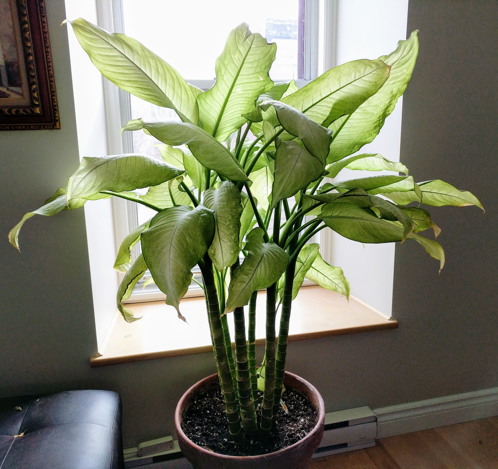
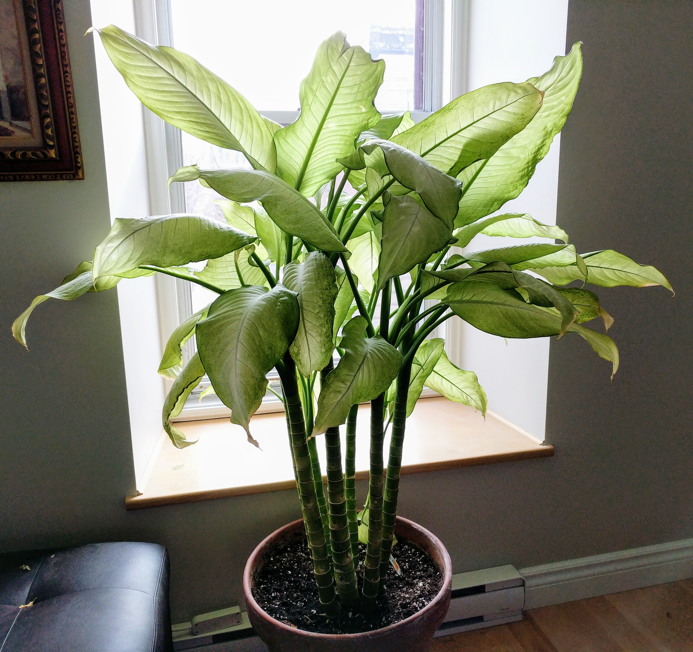

There are numerous plants that can potentially harmful to your pet if they come in contact or chew on them. For the most part, you do not need to be overly concerned that hazards abound with every plant, flower or blade of grass. Most adult dogs will leave poison plants alone, however, puppies are particularly susceptible to plant poisoning. Much like human infants who have ever increasing level of mobility, puppies will experiment in their environment. Cats are discerning grazers, however, some house plants pose a significant temptation and grave danger to cats.
There are other indirect factors that could lead to poisoning:
Some tips:
Steps to take when you know your pet has ingested poisonous plant
The information provided here is designed to help you identify the most serious and immediate hazards with regard to poisonous plants. Recognizing symptoms and severity of the intoxication and accurately identifying the source may save you from having to make an unnecessary (and costly) trip to the emergency vet or it may just save your pet’s life.
Template format:
Genus
Common names
POTENTIALLY FATAL if applicable
Body systems impacted (Mouth, Stomach, Coat, Cardio, Nervous Sys)
IMG(s)
Description
Commonly seen in environments
Toxic parts
Toxicosis
Atamsco Lily, Autumn Crocus, Crocus, Fairy Lily, Fall Crocus, Meadow Saffron, Mysteria, Naked Ladies, Rain Lily, Storm Lily, Water Lily, West Wind Flower, Wonder Bulb, Zephyr Lily
Eyes: dilation or contraction of pupils
Stomach: Immediate burning in the mouth and throat, intense thirst, abdominal pain, cramping, difficulty swallowing, vomiting, nausea, excessive salivation
Cardiovascular: weak pulse, severe cardiac arrhythmia are common
Nervous system: muscle weakness, eventually leading to paralysis; staggered walking, convulsions, lethargy, coma, shock
Kidney / Liver Failure
Clump forming perennial herb with thin leaf blades. Leaves are typically green and grow from the bottom of the plant. There are six petals on the flowers whose colors vary from white, cream, yellow or pink. They petals fan out from the base of the stalk and normally bloom after rainfall.
Wet soil to desert conditions. Commonly found in parks or gardens as cultivated ornamental plant.
Entire plant, particularly the bulbs
Alkaloids: Lycorine and others
Azalea, Alpenrose, Rhododendron, Rosebay
Just a few leaves eaten may cause oral irritation, followed by vomiting and diarrhea. If a large number of leaves have been ingested, a significant drop in blood pressure, possible coma and even death.
Group of approximately 800 large perennial shrubs or small trees which can grow to about 10 - 12 feet. Leaves can be large or small, smooth, leathery, evergreen and may have a reddish underside. Some flowers are fragrant and can have a spots, stripes, or different color outline. A single blotch of color may be present that emerges from the throat of the flower. Although the flower size varies, they are typically bell-shaped and grow in clusters. The plants colors may vary from yellow, red, orange, pink, white, or mauve. The fruit is a woody capsule containing many tiny seeds.
Gardens, commercial landscapes, recreational areas or parks.
The entire plant, especially the leaves
Andromedotoxins, Grayanotoxins, Glycosides
Cyclamen (also known as sowbread) is a pretty, flowering plant that is toxic to dogs and cats. If ingested, this plant can cause increased salivation, vomiting and diarrhea. If an animal ingests a large amount of the plant’s tubers — which are found at the root, generally below the soil — heart rhythm abnormalities, seizures and even death can occur.
Alpine Violet, Cyclamen, Persian Violet, Shooting Star, Sowbreed
Stomach
Tuberous, perennial plant with a soft and leafy texture which is either evergreen (leaves may fall for brief period in the fall). The leaves are long and skinny and usually heart shaped. They can appear rounded or triangular in appearance, grey-green or blue-green coloring (they plant may be multi-colored) and may be serrated on their edges.
Dry forests, scrub, gardens
The entire plant is toxic, especially the bulbs and roots.
Triterpenoid saponins
Although the entire plant is considered poisonous to dogs, it is the Daffodil bulb that is the most toxic. Ingestion of any portion of a Daffodil can cause vomiting, diarrhea, abdominal pain, arrhythmias, convulsions, and a serious drop in blood pressure. Dogs are more prone to poisoning as they may dig up the plant bulbs from the garden and eat them.
Daffodil, Jonquil, Paperwhites
Vomiting, diarrhea, slower heart rate, arrhythmias, heart failure and coma which can result in death.
Perennial lilies with orange, white or yellow flowers typically with six petals. The petals are fused together to form the shape of a trumpet. Flowers grow on a stalk in the middle of strap like leaves.
Meadows, pastures, roadsides, mountains, gardens
Entire plant is poisonous, particularly the bulbs.
 
CREDIT: By <a href="//commons.wikimedia.org/w/index.php?title=User:ViterbiAlg&action=edit&redlink=1" class="new" title="User:ViterbiAlg (page does not exist)">AJ West</a> - <span class="int-own-work" lang="en">Own work</span>, <a href="https://creativecommons.org/licenses/by-sa/4.0" title="Creative Commons Attribution-Share Alike 4.0">CC BY-SA 4.0</a>, <a href="https://commons.wikimedia.org/w/index.php?curid=55021393">Link</a>
Charming diffenbachia, Dumbcane, Dumb Plant, Exotica Perfection Diffenbachia, Giant Dumb Cane, Gold Diffenbachia, Golden Cane, Spotted Dumb Cane
Stomach: Irritation, burning, swelling of mouth, tongue and lips, salivation, vomiting, diarrhea
Respiratory: Difficulty swallowing due to swelling of throat; air passage can become blocked resulting in death
Perennials coming in plant or vine form. Leaves are large and simple, growing on stalks which shield the plant’s stem. The leaves have an elliptical shape and have a wide variety of colors, usually green or cream with green border or mix of the two.
Tropical regions, under a canopy in a humid environment, cultivated as outdoor houseplants in tropical regions, indoor houseplants in regions without appropriate humidity levels.
The entire plant is toxic
Calcium oxalate crystals. Proteolytic enzymes.
Amethyst Scallops, Flaming Katy, Flap Jack, Friendly Neighbor, Jungle Trumpets, Kalanchoe, Life Plant, Mexican-hat Plant, Miracle Leaf, Mother of Millions, Panda Plant, Penwiper
Also known as the Mother-In-Law plant, the Kalanchoe is a common house plant with small dense flowers. When ingested it can cause vomiting and diarrhea. In rare cases, heart arrhythmias can occur from a poisoning.
Made up of 125 tropical, succulent flowering plants, most of which are perennial with a few species annual or biennial. The leaves have diverse attributes: size, texture, color. Flowers are small, star shaped and consist of four petals, coming in several shades of red, yellow and orange.
Deserts, Buschlands, open land with rocks, exposed hilltops, gardens and commercial landscapes.
Cardiac glycosides: Bufodienalides


Asian Lily, Easter Lily, Japanese Show Lily, Kafir Lily, Leopard Lily, Orange Day Lily, Oriental Lily, Peruvian Lily, Red Lily, Rubrum Lily, Spider Lily, Stargazer Lily, Tiger Lily, Wood Lily
Lilium genus is made up of nearly 100 species of flowers. They are usually an upright plant, with one leafy stem per bulb, on which grows smooth leathery green leaves. The flowers are shaped like trumpets, cups or bells in a wide range of colors (except blue).
Mountains, sandy beaches, swampy bogs, wetlands, grassland, gardens and commercial landscapes
Toxicity is moderately high, but mostly for cats. All parts of the plant, particularly leaves
lilies contain oxalate crystals that cause minor signs, such as tissue irritation to the mouth, tongue, pharynx, and esophagus – this results in minor drooling. The more dangerous, potentially fatal lilies are true lilies, and these include lilies – all of which are highly toxic to cats! Even small ingestions (such as 2-3 petals or leaves) can result in severe kidney failure.
Generally, a cat’s first reaction to this plant includes vomiting, lethargy and lack of appetite, but kidney failure and even death can quickly follow if a cat is untreated. The peace lily (also known as Mauna Loa) is toxic to both dogs and cats. Ingestion of the peace lily or calla lily can cause irritation of the tongue and lips, increased salivation, difficulty swallowing and vomiting.

Oleander, Pink Laurel, Rosebay
Nausea, vomiting, diarrhea, decreased body temperature, pale mucuous membranes.
Drowsiness, excitability, lethargy, depression, tremors, seizures, paralysis and coma, which can result in death.
Shrub or small tree that can grow to height of 20-25 ft. Leaves are nondescript, evergreen, narrow and grow away from one another. Flower colors are white, pink, apricot, red, and pale yellow. They may be single or double. The entire plant has a gummy, clear sap that is highly poisonous. Pods are long and narrow with numerous seeds.
Grasslands, lakes, river banks, bushland, gardens and commercial landscapes.
The entire plant is toxic, particularly the spa and vase water.
CREDIT: U.S. Botanical Garden
Cycad, Sago Palm
The Sago Palm is an extremely poisonous plant to dogs when ingested, causing bloody vomiting and diarrhea, bleeding disorders, liver failure and death.
The Cycas genus is a group of approximately 90 species of evergreen, seed plants with a pollen cone and set of leaves which can be palm like in appearance. Leaves are glossy green with narrow leaflets and sunken midrib. The yellow-tan seeds are large, plum like and are loosely arranged around the stem.
Forests, woodlands, savannah, gardens and commercial landscapes
The entire plant, particularly the seeds (1 - 2 can kill a dog)
Glycosides; Amino acid BMAA; Azoglycoside: Cycasin which is converted to methylazomethanol. Neurotoxi amino acid: B-N-methylamino-L-alanine

Although the entire plant of a tulip is considered toxic, it is the bulb that is the most poisonous to dogs. Ingestion can cause significant oral irritation, excessive drooling and nausea.
Tulip
Nausea, vomiting, diarrhea, hyper salivation, inappetence
Labored breathing
Tulipa is a group of herbaceous perennials which can grow to over 2 ft tall. Tulips grow from a bulb encased in a smooth, tissue like cover. A maximum of 12 strap-like leaves can form on a single plant; they are light to medium green in color. The flowers usually are supported by a single, leafless stem, however, some species may have up to four flowers on a single stem. Flowers are cup-shaped, with three petals and three sepals. The fruit is capsule size, somewhat resembling an ear of corn. It has a leather texture, ellipse shape, and contains numerous seeds.
Mountainous areas, recreation areas, gardens
The bulbs, leaves and stem
Tuliposide A.
Dutch hyacinth, Hyacinth, Roman Hyacinth
Dermatitis, colic, vomitting, diarrhea, tremors, depression.
A bulbous perennial that can grow to about 2 feet. The leaves are long, narrow, gently rolling inwards toward the center of the plant. The stem is leafless, with up to 50 stalks of flowers. Flowers range in color from white, red, orange, pink, yellow, lavender, and blue. Flowers are funnel shaped with one or two petals.
Gardens, rocky hillsides
Entire plant is toxic.
Alkaloids